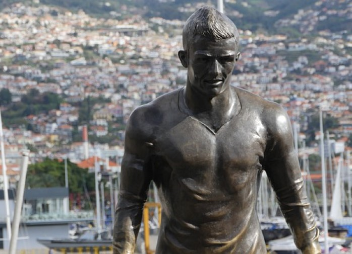

- Cristiano Ronaldo arrived at Juventus with a reputation as one of the most accomplished goalscorers of all time and, as you'd expect, with that comes great expectations.
- The Serie A champions saw fit to fork out €100 million (£88m/$117m) for the 34-year-old for a number of reasons, but chief among those is his incredible capacity to find the back of the net0.
- Ronaldo's record across his career is epic and prior to his arrival in Turin he had struck 658 goals in 915 club games , with 450 of those coming in his 438 games for Real Madrid.
- More Info

- The Cristiano Ronaldo statue is 3.4 meters tall, weighs 800 kilos and was sculpted in bronze by Madeiran sculptor Ricardo Veloza.
The position of the statue was inspired by the way the player part for kick the ball (parallel legs and eyes focused).
- The statue is located by the praça do mar, the pier entrance of the city of Funchal, is a transit point for thousands of tourists coming from the cruises, and who take the opportunity to take a picture with the statue of the playmaker.
- More Info